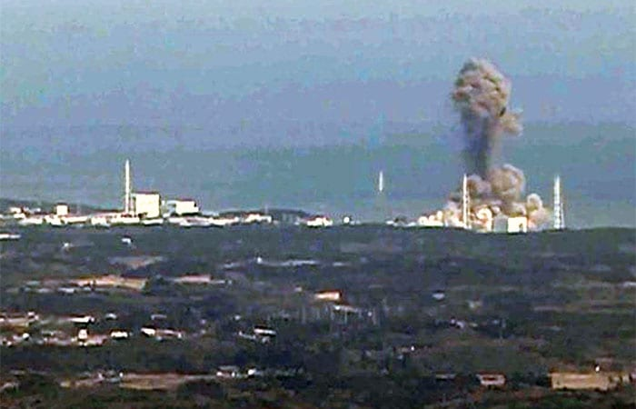
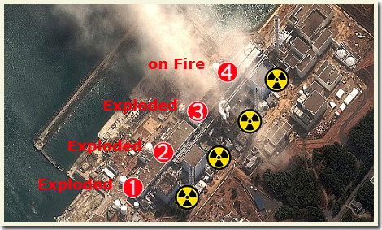
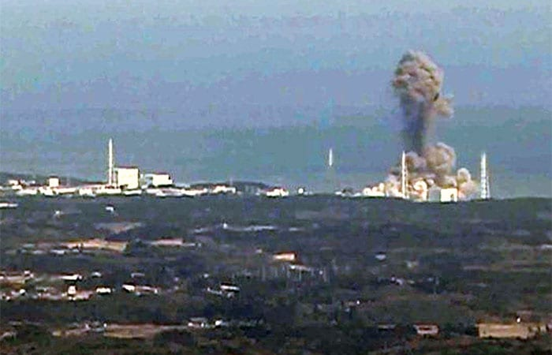
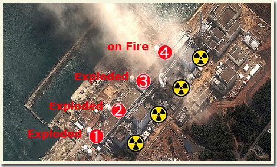

Fukushima Daiichi Nuclear Disaster (2011)

 



Overview
The Fukushima disaster occurred on March 11, 2011, after a 9.0 magnitude earthquake triggered a massive tsunami along Japan’s eastern coast. The tsunami flooded the Fukushima Daiichi Nuclear Power Plant, disabling the cooling systems of three reactors and leading to hydrogen explosions and reactor meltdowns.
Although immediate radiation-related deaths were not recorded, over 1,000 indirect deaths occurred due to evacuation stress and medical complications. The disaster caused significant contamination of air, soil, and coastal waters. Radioactive materials such as Cesium-134, Cesium-137, and Iodine-131 were released.
Fukushima raised concerns about nuclear safety worldwide, particularly regarding plants located in earthquake-prone regions. Japan implemented new safety regulations, and the disaster continues to influence global discussions about nuclear energy, emergency planning, and sustainable alternatives.